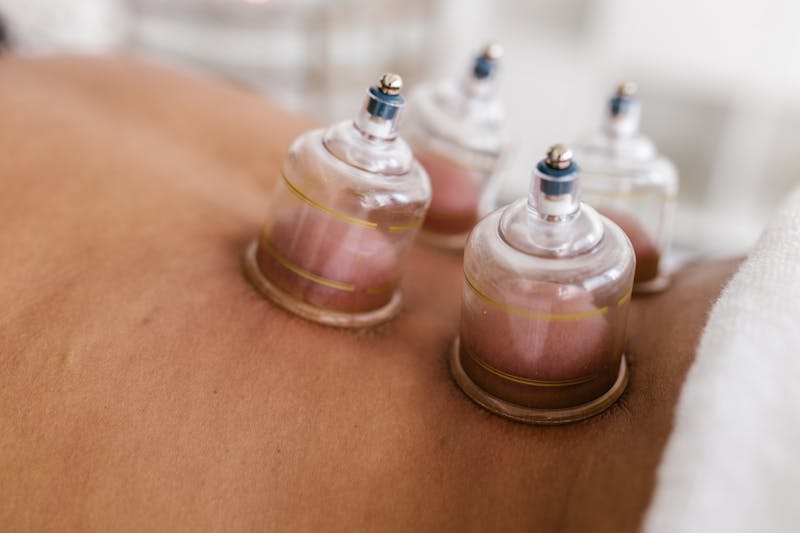

If you have ever watched athletes at the Olympics sporting distinctive circular marks on their shoulders and backs, you have seen the aftermath of cupping therapy. What was once considered a niche treatment has entered the mainstream - and for good reason. Dry cupping is a simple, non-invasive technique that can provide meaningful relief for muscle pain, tension, and a range of musculoskeletal conditions.
Despite its growing popularity, there is still plenty of confusion about what dry cupping actually involves, how it differs from other forms of cupping, and what those telltale marks really mean. In this guide, we will walk through everything you need to know - from the science behind the suction to what a typical session looks like and how you can support your recovery at home.
What is Dry Cupping?
Dry cupping is a suction-based therapy in which cups - typically made of silicone, plastic, or glass - are placed on the skin to create negative pressure. Unlike wet cupping, which involves small incisions in the skin, dry cupping is completely non-invasive. The cups are applied directly to the skin's surface and left in place or gently moved across the tissue, depending on the treatment goal.
The practice has roots in Traditional Chinese Medicine and has been used in various forms across cultures for thousands of years. Today, it is widely used by physiotherapists, massage therapists, and other healthcare professionals as part of evidence-informed treatment plans for pain and mobility issues.
When the cup is placed on the skin and suction is applied, it lifts the underlying soft tissue - skin, fascia, and superficial muscle layers - upward into the cup. This decompression effect is what sets cupping apart from most other manual therapies, which work by pressing or compressing tissue downward.
How Does Dry Cupping Work?
Most hands-on treatments - massage, manual therapy, foam rolling - apply compression to the body's tissues. Dry cupping does the opposite. By creating negative pressure (suction), it lifts and separates the layers of tissue beneath the skin. Think of it as a reverse deep tissue massage.
This decompression creates several physiological effects:
- Increased blood flow - the decompression pulls circulation into the cupped area, bringing more oxygenated blood to tissues that are often under-perfused when they sit tight for long periods, which supports the body's natural healing processes
- Fascial release - the lifting action helps separate layers of fascia (the connective tissue that surrounds muscles) that may have become adhered or restricted due to injury, overuse, or prolonged posture
- Reduced muscle tension - by gently stretching the muscle fibres and surrounding tissue, cupping can help release tightness and ease trigger points
- Improved lymphatic drainage - the movement of fluid in the treated area may help reduce local inflammation and swelling
- Nervous system response - the gentle pulling sensation activates sensory receptors in the skin and fascia, which can help modulate pain signals and promote relaxation
In clinical practice, cupping is rarely used in isolation. It is most effective when combined with other physiotherapy techniques such as exercise prescription, stretching, manual therapy, and education - working together to address the root cause of your symptoms rather than just the surface-level discomfort.
Benefits of Dry Cupping Therapy
Research into cupping therapy continues to grow, and while more high-quality studies are always welcome, the existing evidence - combined with strong clinical outcomes - supports its use for a number of conditions. Here are the key benefits patients and practitioners report:
- Pain relief - cupping has been shown to reduce pain in conditions including chronic low back pain, neck pain, and shoulder tension. The combination of increased blood flow, fascial release, and nervous system modulation contributes to both immediate and lasting relief
- Reduced muscle tension and stiffness - the decompression effect helps loosen tight muscles that resist traditional compression-based techniques. This is especially helpful for people who carry tension in their upper back, shoulders, and neck
- Improved circulation - by drawing blood to the surface, cupping promotes the delivery of oxygen and nutrients to tissues that may be slow to heal due to poor circulation or chronic tightness
- Faster recovery - athletes and active individuals often use cupping to speed up recovery after intense training. The increased blood flow helps clear metabolic waste from tired muscles and reduces delayed-onset muscle soreness (DOMS)
- Complements other treatments - cupping pairs well with physiotherapy exercises, dry needling, acupuncture, and manual therapy. It can be used as a warm-up technique to prepare tissue for deeper work or as a recovery tool after more intensive treatment
What Conditions Does Cupping Help With?
Dry cupping is a versatile treatment that can benefit a wide range of musculoskeletal conditions. While it is not a cure-all, it is a valuable tool within a comprehensive treatment plan. Common conditions that respond well to cupping include:
Back and neck pain: Whether your pain is caused by prolonged sitting, poor posture, a disc issue, or general muscle tightness, cupping can help relieve tension in the paraspinal muscles and improve mobility in the thoracic and cervical spine. Many patients notice an immediate reduction in stiffness after treatment.
Shoulder tension and upper trapezius tightness: If you spend hours at a desk or frequently carry stress in your shoulders, cupping can be remarkably effective at releasing the upper trapezius and surrounding muscles. The decompression lifts the tissue in a way that is difficult to replicate with traditional massage alone.
Sports recovery and athletic performance: Cupping is popular among athletes for good reason. It can help reduce muscle soreness after training, improve tissue flexibility, and support faster return to sport. It is commonly applied to the hamstrings, quadriceps, calves, and upper back.
Headaches from muscle tension: Tension-type headaches often originate from tightness in the neck, upper back, and suboccipital muscles (the small muscles at the base of your skull). By releasing this tension, cupping can help reduce the frequency and intensity of headaches for some patients.
Myofascial restrictions: When fascia becomes restricted - whether from scar tissue, repetitive strain, or inflammation - it can limit movement and contribute to pain. Cupping directly addresses these fascial adhesions by creating space between tissue layers.
What to Expect During a Dry Cupping Session
If you have never had cupping before, knowing what to expect can help you feel more comfortable going into your first session.
Before treatment: Your physiotherapist will begin by assessing the area of concern, discussing your symptoms and goals, and determining whether cupping is appropriate for your condition. Cupping is often one component of a broader treatment session that may also include exercise, manual therapy, or other techniques.
During treatment: The therapist will apply silicone or plastic cups to the target area. Once the cup is placed, suction is created either by squeezing the cup (for silicone cups) or using a hand pump (for plastic cups). You will feel a gentle pulling or lifting sensation as the tissue is drawn up into the cup. The sensation is often described as a firm stretch - noticeable but not painful. If any cup feels too tight, your therapist can easily adjust the suction.
The cups are typically left in place for 5–15 minutes, depending on the treatment area and your tolerance. In some cases, the therapist may use a gliding technique, moving the cups along the muscle with the help of lotion or oil. This approach covers a broader area and can feel similar to a deep tissue massage.
After treatment: You may feel a pleasant sense of lightness or looseness in the treated area. Some people experience mild tenderness at the cupping sites, similar to the feeling after a firm massage. This typically resolves within a day or two. Your therapist will likely recommend staying hydrated and avoiding intense exercise for the rest of the day.
Cupping Marks: What They Mean and Why They Are Not Bruises
The circular marks left by cupping are one of the most recognizable - and most misunderstood - aspects of the treatment. It is natural to look at them and think "bruise," but they are actually quite different.
A bruise occurs when blunt force damages blood vessels, causing blood to leak into surrounding tissue. Cupping marks, on the other hand, are caused by blood being drawn to the surface of the skin through suction. The capillaries are not damaged in the same way - blood is simply pulled upward into the superficial layers of tissue, creating a visible discolouration.
What the colour tells you: The shade of a cupping mark can vary from light pink to deep purple, and it often reflects the state of the underlying tissue. Lighter marks generally indicate healthy tissue with good circulation. Darker marks may suggest more stagnation - meaning the area had poor circulation, increased metabolic waste, or significant tension. As the body processes the marks and circulation improves, subsequent sessions often produce lighter marks in the same area.
How long do they last? Cupping marks typically fade within 3–10 days, depending on the individual and the intensity of the treatment. They are not painful to the touch (unlike a bruise) and do not require any special care. If you have an event or plan to wear something that would expose the treated area, you may want to schedule your session with enough lead time for the marks to fade.
At-Home Care Between Sessions
While professional cupping sessions provide the most targeted results, there are things you can do at home to maintain the benefits and support your recovery between appointments.
Self-cupping with silicone cups: If your physiotherapist recommends it, a silicone cupping set can be a useful tool for self-care at home. Silicone cups are easy to use - you simply squeeze the cup, place it on the skin, and release to create suction. They work well on larger muscle groups like the upper back, thighs, and calves. Start with light suction and short durations (2–5 minutes) until you get comfortable with the technique, and always follow the guidance your therapist provides.
Targeted self-massage: A massage ball is a great complement to cupping for working on specific trigger points and areas of tension. Place the ball between your body and a wall or the floor, then gently roll over the tight spot for 1–2 minutes. This is particularly effective for the upper back, glutes, and the muscles along the spine. Avoid pressing too aggressively - the goal is to encourage the muscle to release, not to force it.
Foam rolling for broader areas: For general muscle maintenance and fascial mobility, a foam roller is a practical addition to your routine. Foam rolling works on the compression side of the equation (as opposed to cupping's decompression), and using both approaches together can help keep your muscles and fascia moving well. Spend 1–2 minutes per muscle group, rolling slowly and pausing on tender spots.
These tools are most effective when used as part of the home exercise and self-care plan your physiotherapist designs for you. They are not a replacement for professional treatment, but they can extend the benefits of each session and help you stay on track between visits.
Tools Mentioned in This Guide
- Silicone Cupping Set - for at-home self-cupping on larger muscle groups between professional sessions
- Massage Ball - for targeted trigger point self-massage and relieving localized tension
- Foam Roller - for general muscle maintenance, fascial mobility, and recovery between sessions
Disclosure: As an Amazon Associate, I earn a small commission from qualifying purchases made through the links above. As a healthcare professional, I am not endorsing or promoting these specific products. The items mentioned are general suggestions based on what may be helpful for the topics discussed in this article. Readers should do their own research and due diligence before purchasing any product. You are free to find and purchase similar products from any supplier of your choice - this will not affect your access to the content on this site or any physiotherapy services.
Curious Whether Cupping Could Help You?
Jumana Khambatwala is a Registered Physiotherapist offering dry cupping therapy in Ottawa and Limoges, ON. Book a consultation to discuss your symptoms and find out if cupping is the right fit for your treatment plan.
Book a Consultation